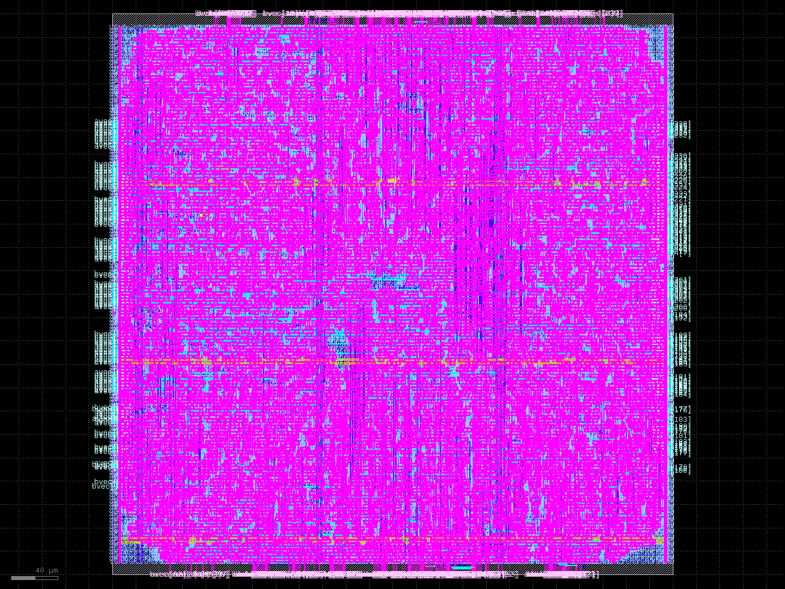

Every transcript below is captured live from the benches (pure Verilator + baked checkpoint bytes). Token ids are the prompt language: there is no text tokenizer in the repo, so prompts are id lists and vectors are the answers. Only the 8 baked rows are programmed into the demo init image; other ids read zero (sparse init, not a model result). Full token coverage needs the 18 MB embed_full.hex image.
make -C src/sim_verilator prompt PROMPT_IDS='1 2 0x42 9999'
make: Entering directory '/home/alrida-ismail/github/rocketEDA/albert-chip-demo/src/sim_verilator' cd /home/alrida-ismail/github/rocketEDA/albert-chip-demo && ./src/sim_verilator/obj_embed/Vtb_embed 1 2 0x42 9999 [embed] 8 baked golden ids loaded [embed] prompt of 4 token ids tok 0x0001 ( 1) -> vec[0..7] = b7 eb fb 3e e0 f8 16 06 OK tok 0x0002 ( 2) -> vec[0..7] = c1 05 25 ed f6 c8 07 f4 OK tok 0x0042 ( 66) -> vec[0..7] = 00 00 00 00 00 00 00 00 (no golden) tok 0x270f ( 9999) -> vec[0..7] = 00 00 00 00 00 00 00 00 (no golden) PROMPT DONE (4 ids, no golden mismatches) make: Leaving directory '/home/alrida-ismail/github/rocketEDA/albert-chip-demo/src/sim_verilator'
make -C src/sim_verilator embed
make: Entering directory '/home/alrida-ismail/github/rocketEDA/albert-chip-demo/src/sim_verilator' cd /home/alrida-ismail/github/rocketEDA/albert-chip-demo && ./src/sim_verilator/obj_embed/Vtb_embed [embed] 8 baked golden ids loaded tok 0x0000 ( 0) -> vec[0..7] = 12 3e 29 fd f3 1a 14 1c OK tok 0x0001 ( 1) -> vec[0..7] = b7 eb fb 3e e0 f8 16 06 OK tok 0x0002 ( 2) -> vec[0..7] = c1 05 25 ed f6 c8 07 f4 OK tok 0x7cff (31999) -> vec[0..7] = eb d8 c5 2d 3e d8 20 03 OK tok 0x1009 ( 4105) -> vec[0..7] = 12 d2 ee 1d e1 0e 12 06 OK tok 0x6310 (25360) -> vec[0..7] = f1 40 f4 36 d5 17 05 ea OK tok 0x163e ( 5694) -> vec[0..7] = f3 ed e2 0f 38 cc c6 f3 OK tok 0x5e26 (24102) -> vec[0..7] = ef e9 cd 0d de 00 f7 9f OK tok 0x7d00 (32000, out of range) -> all-zero OK EMBED_VLT PASS (8 ids) make: Leaving directory '/home/alrida-ismail/github/rocketEDA/albert-chip-demo/src/sim_verilator'
make -C src/sim_verilator rmsnorm
make: Entering directory '/home/alrida-ismail/github/rocketEDA/albert-chip-demo/src/sim_verilator'
cd /home/alrida-ismail/github/rocketEDA/albert-chip-demo && ./src/sim_verilator/obj_rmsnorm/Vtb_rmsnorm
[rmsnorm] frame: 576 x lanes, 576 gamma lanes, 576 golden lanes
lane | x_in | gamma | y_out | golden | err
0 | -32768 | 54 | -95 | -96 | 1 ok
1 | 32512 | 18 | 31 | 31 | 0 ok
2 | -31488 | 11 | -19 | -18 | 1 ok
3 | 30208 | -25 | -41 | -40 | 1 ok
4 | -12544 | 51 | -34 | -34 | 0 ok
5 | -9216 | 21 | -10 | -10 | 0 ok
6 | 25600 | 25 | 34 | 34 | 0 ok
7 | 3840 | 18 | 4 | 4 | 0 ok
.. 568 more lanes checked silently
zero frame: 576 pulses, 0 nonzero -> ok
RMSNORM_VLT PASS (576 lanes, tol=3 LSB)
make: Leaving directory '/home/alrida-ismail/github/rocketEDA/albert-chip-demo/src/sim_verilator'
make -C src/sim_verilator inproj
make: Entering directory '/home/alrida-ismail/github/rocketEDA/albert-chip-demo/src/sim_verilator' cd /home/alrida-ismail/github/rocketEDA/albert-chip-demo && ./src/sim_verilator/obj_inproj/Vtb_inproj [inproj] frame0 (Q third): accum+y exact, y_valid x1 [inproj] frame1 (K third): accum+y exact, y_valid x1 [inproj] frame2 (V third): accum+y exact, y_valid x1 [inproj] S=2 frame: 2 rows x 960 bytes exact, y_valid x1 y[0..7] = -128 -128 -128 -128 -128 -128 -128 127 y[576..583]= -128 -128 -128 -128 -128 -128 -128 -128 y[768..775]= 127 127 -128 -128 127 127 127 127 INPROJ_VLT PASS (4 frames: 3xS=1 + S=2 rows, dots + bytes exact) make: Leaving directory '/home/alrida-ismail/github/rocketEDA/albert-chip-demo/src/sim_verilator'
make -C src/sim_verilator top
make: Entering directory '/home/alrida-ismail/github/rocketEDA/albert-chip-demo/src/sim_verilator' cd /home/alrida-ismail/github/rocketEDA/albert-chip-demo && ./src/sim_verilator/obj_top/Vtb_top [top] baked ids + subset weights loaded phaseB pushed 64 ids PASS phaseB X0 valid after 55934 cyc PASS phaseP stall freeze (20cyc, layer 3) PASS phaseB LOOP30 done after 223 cyc PASS phaseP layers 0..29 + phases p0..p3 all observed PASS phaseB X_30 = X_0+30 full-frame PASS phaseB oracle argmax pred=2 logit=000390ce phaseB head done exactly-once PASS phaseB pred=2 matches oracle PASS TOP_VLT PASS (ids->pred full model + protocol) make: Leaving directory '/home/alrida-ismail/github/rocketEDA/albert-chip-demo/src/sim_verilator'
| Block | sky130 cells | Notes |
|---|---|---|
| mac_unit | 528 | yosys 0.62, tt corner |
| mac_array P=32 | 12,401 | ABC 52 s Booth-recoded; GDS below |
| dotK K=128 | 48,939 | ABC 31 min single-threaded |
mac_array placed+routed (LibreLane Classic, sky130A, 480x480 um): 13,915 nets, 363,757 um wire, zero DRC, GDS 33 MB / 485,719 shapes.
